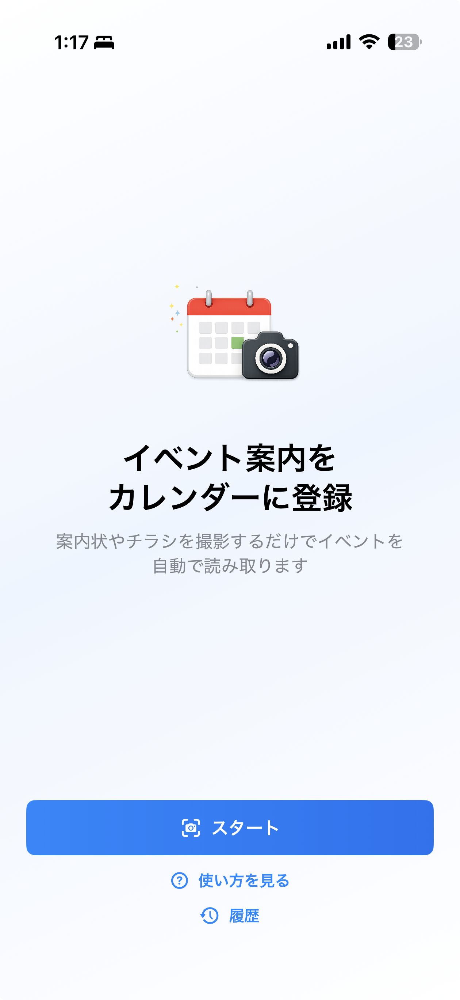
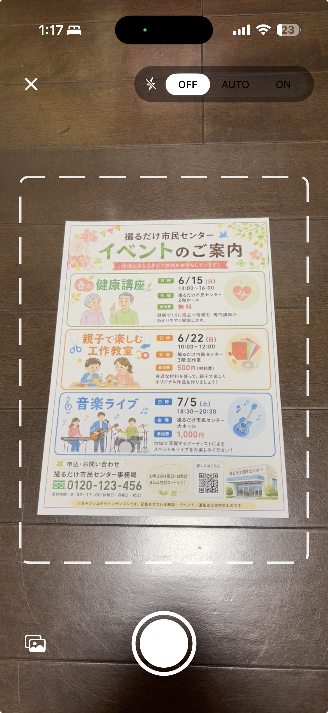
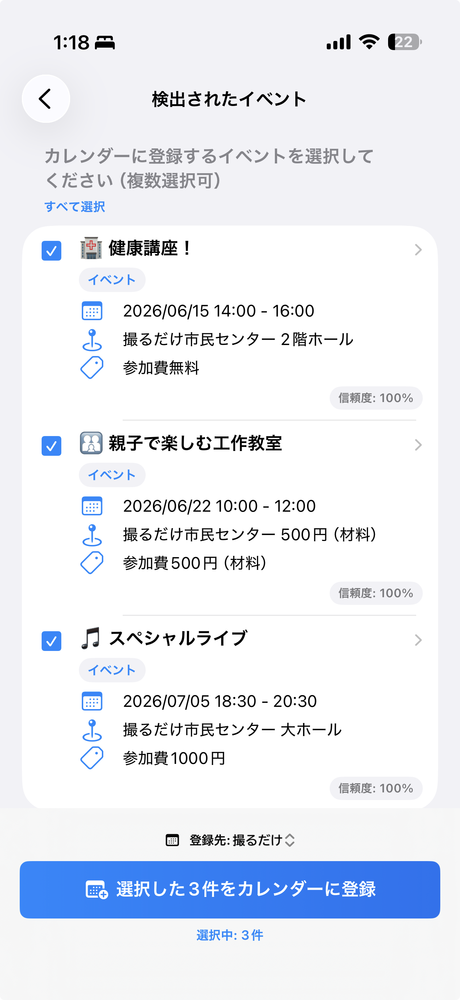

撮影して読み取り
カメラで案内画像を撮影するか、写真アプリから画像を選んで予定情報を解析できます。
撮るだけ予定登録は、イベント案内やチラシの画像から予定候補を読み取り、カレンダー入力の手間を減らすためのiPhoneアプリです。
カメラで案内画像を撮影するか、写真アプリから画像を選んで予定情報を解析できます。
検出されたタイトル、日時、場所、メモを登録前に確認し、必要に応じて編集できます。
1枚の画像から複数の予定を検出し、必要なものだけを選んで一括でカレンダーに登録できます。
地域イベント、学校行事、講座、説明会、点検予定など、画像からカレンダーに移したい場面を想定しています。
撮影画像や選択した画像の文字を読み取り、イベント名や日時らしき情報を抽出します。
予定ではない案内や申込締切などを外し、登録したい候補だけを選択できます。
登録前にカレンダーを選び、重複の可能性がある予定も確認できます。
過去に読み取った結果を確認し、必要に応じて再編集できます。
写真アプリなどから画像を共有し、撮るだけ予定登録で解析できます。
画像解析と予定候補の抽出は対応端末上で行われ、画像や抽出結果を開発者のサーバーへ送信しません。
案内画像を用意し、読み取り結果を確認してからカレンダーへ登録します。
撮影、候補確認、登録、履歴確認までをシンプルな流れで進められます。



いいえ。画像の明るさ、文字の小ささ、レイアウト、日時表記によって読み取り結果が変わります。登録前に必ず候補内容を確認してください。
申込締切、問い合わせ先、注意書きなどが候補として表示される場合があります。不要な候補はチェックを外して登録対象から除外できます。
iOSの設定でカレンダーへのアクセスが許可されているか確認してください。登録先カレンダーが読み取り専用の場合は、別のカレンダーを選択してください。
画像解析と予定候補の抽出は対応端末上で処理されます。開発者は、ユーザーが選択した画像や抽出結果をサーバーへ送信しません。
カメラで撮影した案内画像は写真アプリに保存されます。写真アプリから選択した既存画像は重複保存しません。
アプリ内の履歴画面から、不要になった解析履歴を削除できます。
読み取り結果は自動生成されるため、重要な予定は登録前に必ず日時、場所、タイトルを確認してください。
利用できる機能は、端末、OS、Apple Intelligenceの設定やモデルの準備状況によって変わる場合があります。
不具合の報告、ご質問、ご要望はお問い合わせフォームからお送りください。確認に必要な場合は、端末名、iOSバージョン、アプリのバージョン、発生した操作を添えてください。